Laparotomy is the surgical opening of the abdominal wall so that the veterinarian can see, feel and treat the organs inside the abdomen. In cattle it is one of the most important and most frequently performed abdominal operations — used both to reach a diagnosis when examination and ultrasound cannot explain the problem, and to treat conditions such as a displaced abomasum, intestinal obstruction or peritonitis.
Unlike in small animals, laparotomy in cattle is usually performed on the standing animal, through the flank, under local or regional anaesthesia. This avoids the risks of general anaesthesia and recumbency in a large ruminant. This guide explains the theory, the indications, anaesthesia, the surgical approaches, the step-by-step procedure, closure, aftercare and complications.
Important: All surgical procedures must be performed by a qualified veterinarian under proper anaesthesia and aseptic conditions. Laparotomy is major abdominal surgery — it must never be attempted by an untrained person.
What Is Laparotomy?
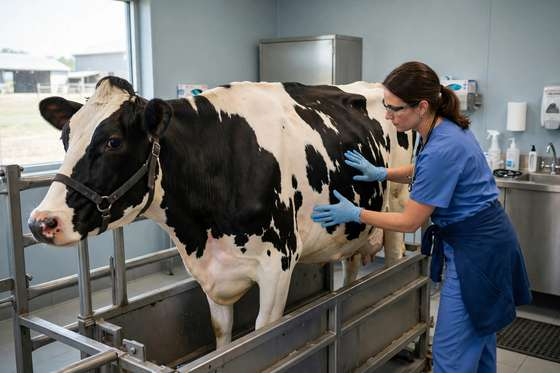
Careful abdominal examination comes first — surgery is planned, never rushed
A laparotomy (from the Greek lapara, flank, and tome, cutting) is an incision through the skin, muscles and peritoneum of the abdominal wall. Once the abdomen is open, the surgeon can explore the rumen, reticulum, omasum, abomasum, intestines, caecum, liver and uterus directly — by sight and by touch — and carry out the treatment the condition needs.
Laparotomy is both a diagnostic and a therapeutic procedure:
Exploratory laparotomy — the abdomen is opened to find the cause of a problem that examination, blood tests and ultrasound could not explain, such as chronic bloat, colic or unexplained weight loss.
Therapeutic laparotomy — the abdomen is opened to perform a known treatment, for example repositioning a displaced abomasum, relieving an intestinal obstruction or draining an abscess.
The standing flank approach is preferred in cattle because the animal's own weight does not press on the lungs, the rumen stays in its normal position, and recovery is faster. The ventral midline approach, with the cow lying on its back under general anaesthesia, is reserved for cases where the underside of the abdomen must be reached.
Indications — When Is Laparotomy Needed?
Laparotomy is indicated when an abdominal disorder needs direct examination or surgical treatment that medicine alone cannot provide.
1
Left displacement of the abomasum (LDA)(Abomasum trapped between the rumen and the left abdominal wall — treated through the left flank)
2
Right displacement of the abomasum (RDA)(Abomasum displaced to the right, often with torsion — treated through the right flank)
3
Intestinal obstruction(Blocked intestine from intussusception, torsion, adhesions or a foreign body — colic, no faeces, distended abdomen)
4
Peritonitis(Infection of the abdominal lining — the surgeon explores, drains fluid and removes the cause)
5
Traumatic reticuloperitonitis(A swallowed nail or wire pierces the reticulum — surgery removes the foreign body and treats the damage)
6
Foreign bodies(Swallowed plastic, rope or metal causing obstruction or chronic indigestion)
7
Caecal dilatation and torsion(Gas-filled, twisted caecum on the right side — emptied or removed through the right flank)
8
Unexplained abdominal disease(Chronic bloat, colic, weight loss or a palpable mass with no clear diagnosis — exploratory laparotomy)
Diagnosis Before Surgery — Preoperative Examination
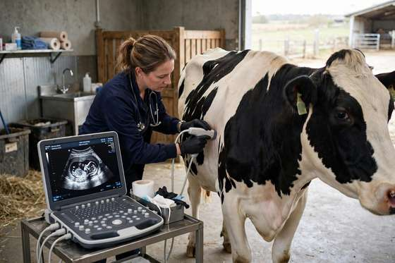
Ultrasound helps confirm the diagnosis and choose the surgical approach
Good surgery starts with good diagnosis. Before any laparotomy the veterinarian carries out a full clinical examination to decide whether surgery is needed, which approach to use, and whether the animal is fit for the operation.
History: appetite, milk yield, faeces, duration of illness, previous treatments and calving history.
General examination: temperature, pulse, respiration, hydration, rumen movements and general condition.
Abdominal examination: inspection for distension, palpation of the flanks, percussion and auscultation — including the "ping" test for a displaced abomasum.
Rectal examination: to feel the rumen, intestines, caecum, kidneys and uterus, and to check the faeces.
Ultrasound: confirms displaced abomasum, fluid in the abdomen, abscesses and intestinal changes, and helps choose the side of surgery.
Laboratory tests: blood examination, and abdominal fluid analysis if peritonitis is suspected.
Preoperative preparation: the animal is fasted only briefly if needed (prolonged fasting is avoided in ruminants), fluids and electrolytes are corrected, and the surgeon prepares sterile instruments, suture material and an assistant. The cow is restrained calmly in a crush or chute, with the tail tied to one side.
Anaesthesia for Laparotomy
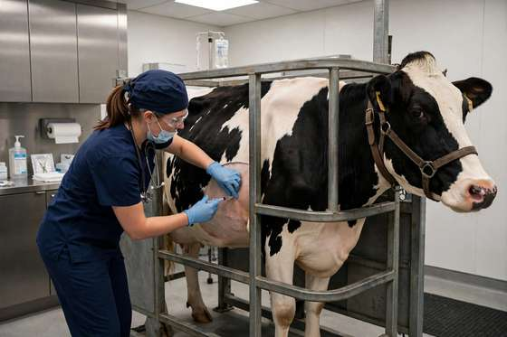
Local anaesthesia desensitises the flank — the cow stays standing and calm
Most cattle laparotomies are done under local or regional anaesthesia with the animal standing. This is safer than general anaesthesia in cattle, because a recumbent cow risks bloat, regurgitation and nerve damage from its own weight.
Paravertebral block: the standard technique for flank surgery. Local anaesthetic (lidocaine) is injected around the spinal nerves (T13, L1, L2) as they leave the spine — the proximal (Farquharson) or distal (Cambridge) method — desensitising the whole flank. It also relaxes the abdominal muscles, making the operation easier.
Local infiltration: a line block along the incision line, or an inverted-L block above and behind the incision site, is used when a paravertebral block is not possible.
Sedation: light sedation with xylazine may be given to calm a nervous animal — as prescribed by the veterinarian.
General anaesthesia: required for the ventral midline approach and for recumbent surgery, with an endotracheal tube and controlled ventilation in a proper surgical facility.
The anaesthetic must be given time to work — at least 10 to 15 minutes — and the flank tested for sensation before the first incision is made.
Surgical Preparation — Site and Instruments
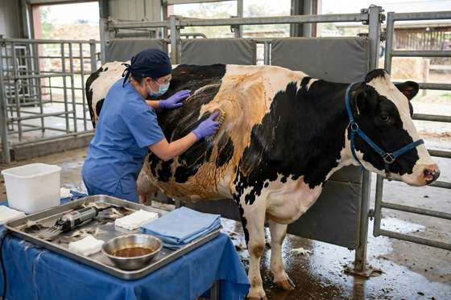
Clipping and antiseptic scrubbing of the flank
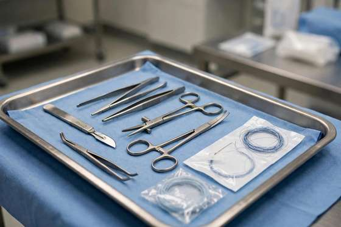
Sterile instruments ready before the first cut
Asepsis decides the outcome. Abdominal infection is the most dangerous complication of laparotomy, so preparation is never rushed.
1
Clip the surgical site(A wide area of the flank is clipped — well beyond the planned incision)
2
Scrub with antiseptic(Repeated scrubbing with chlorhexidine or povidone-iodine, then surgical spirit, in a circular motion from the centre outward)
3
Drape the site(Sterile drapes isolate the incision area and keep the surgeon's hands and instruments clean)
4
Prepare sterile instruments(Scalpel, forceps, needle holders, scissors, retractors, gauze and suture material — checked before surgery begins)
5
Surgeon preparation(Surgical scrub, sterile gloves, cap, mask and gown — the same standard as in a hospital theatre)
Surgical Approaches — Where to Open the Abdomen
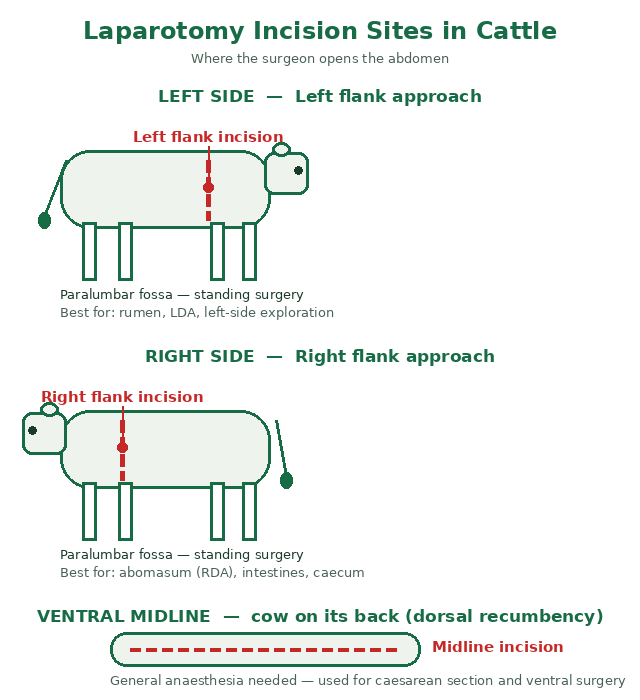
Incision sites — left flank, right flank and ventral midline
The surgeon chooses the approach according to the organ involved and the condition being treated. All three approaches are shown in the diagram above.
1
Left flank (paralumbar fossa)(Vertical incision in the left paralumbar fossa, between the last rib and the hip bone — standing surgery. Best access to the rumen, and the approach for LDA and rumenotomy)
2
Right flank (paralumbar fossa)(Vertical incision in the right paralumbar fossa — standing surgery. Best access to the abomasum, intestines, caecum and liver; the approach for RDA and intestinal surgery)
3
Ventral midline(Incision along the midline of the belly with the cow lying on its back under general anaesthesia. Used for caesarean section, ventral hernia repair and when the underside of the abdomen must be reached)
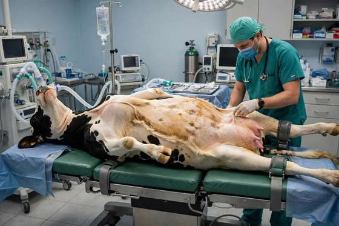
Ventral midline approach — cow on its back, under general anaesthesia
The flank incision is usually vertical (about 20–30 cm) in the paralumbar fossa, where the muscle layers are thinnest and the incision can be extended up or down if more room is needed. A vertical incision also heals with less tension than a horizontal one.
Step-by-Step Operative Procedure
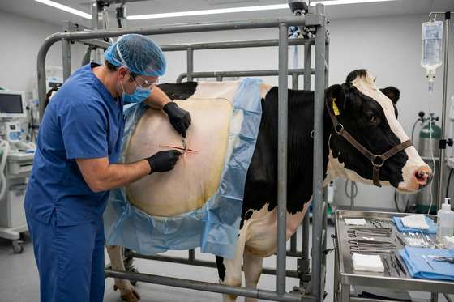
Step 1 — the flank incision, made layer by layer
1
Make the skin incision(A clean vertical incision through the skin of the paralumbar fossa, with the scalpel held firmly and the skin kept taut)
2
Cut through the muscle layers(External oblique, internal oblique and transverse abdominal muscles are cut in turn, with bleeding vessels controlled by ligation or pressure)
3
Open the peritoneum(The thin peritoneum is lifted and nicked carefully so the organs beneath are not injured, then the opening is extended with scissors)
4
Explore the abdominal cavity(Systematic exploration — rumen, reticulum, omasum, abomasum, intestines, caecum, liver, kidneys and uterus are examined in turn by sight and touch)
5
Carry out the corrective procedure(Reposition the displaced abomasum, relieve the obstruction, remove the foreign body, drain the abscess — according to the diagnosis)
6
Check for bleeding and contamination(The abdomen is inspected once more; any bleeding is stopped and spilled contents are removed with sterile gauze)
7
Close the abdomen in layers(Peritoneum and muscle layers, then skin — see the closure section below)
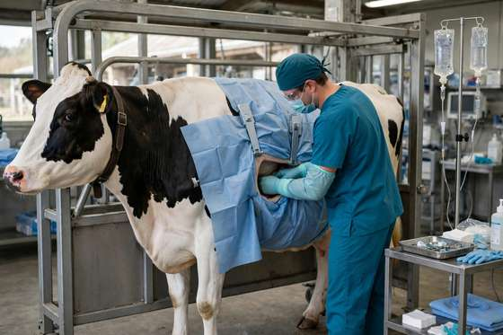
Step 4 — systematic exploration of the abdominal cavity
Exploration order (right flank): the surgeon first checks the abomasum and intestines on the right, then reaches across to the rumen and reticulum on the left, and finally examines the liver, kidneys and reproductive tract. A fixed order means nothing is missed. Throughout the procedure the organs are handled gently and kept moist, and the incision is protected from contamination.
Closure in Layers
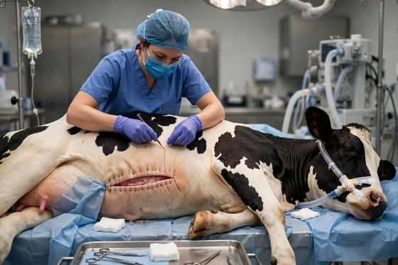
Layer-by-layer closure — the key to a strong, hernia-free repair
The abdominal wall is closed in layers, each with the correct suture material and pattern. Rushing the closure is the most common cause of wound breakdown and hernias.
1
Peritoneum + transverse abdominal muscle(Closed together with absorbable suture in a simple continuous pattern — this is the strength layer)
2
Internal oblique muscle(Closed with absorbable suture, simple continuous or interrupted pattern)
3
External oblique muscle(Closed with absorbable suture, taking care to match the muscle fibres)
4
Skin(Closed with non-absorbable or absorbable suture in an interrupted or continuous pattern, with the edges neatly aligned)
Sutures must be firm but not too tight — over-tight sutures cut off the blood supply and delay healing. The wound is then cleaned, dried and covered with a light protective dressing.
Postoperative Care
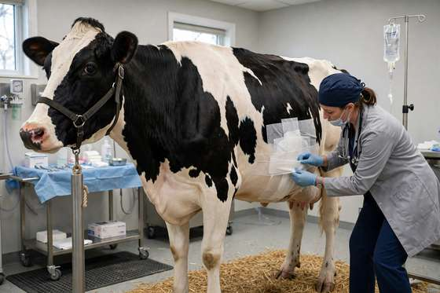
Wound dressing applied after closure
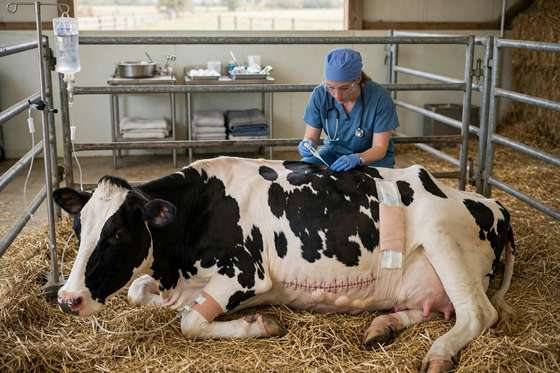
Close monitoring in a clean recovery pen
Good aftercare is as important as the surgery itself. The first 48 hours decide whether the cow recovers smoothly or develops complications.
Housing: a clean, dry, well-bedded pen, protected from flies, mud and other animals.
Monitoring: temperature, pulse, respiration, appetite, rumen movements and faeces checked twice daily for the first week.
Wound care: the wound is checked daily for swelling, heat, discharge or open stitches; the dressing is changed as directed by the veterinarian.
Feeding: fresh water and good-quality hay are offered as soon as the cow is willing to eat, usually within 12–24 hours; normal feeding is resumed gradually over 3–5 days.
Medicines: antibiotics and pain relief (such as flunixin meglumine) as prescribed by the veterinarian, for the full course — never stopped early.
Exercise: gentle walking is encouraged after the first day; the cow should not be turned out with the herd until the wound has healed.
Suture removal: skin sutures are removed after 10–14 days if non-absorbable material was used.
Call the veterinarian at once if: the cow stops eating, develops a fever, the wound swells, discharges pus or opens, or the abdomen becomes distended again. Early treatment of a complication saves the animal.
Complications of Laparotomy
Most laparotomies heal without problems, but the veterinarian and the farmer must watch for complications:
1
Wound infection(Swelling, heat, pain and discharge at the incision — treated with wound care and antibiotics as prescribed by the veterinarian)
2
Wound dehiscence(The wound opens, partly or fully — needs immediate veterinary attention and often re-suturing)
3
Peritonitis(Infection inside the abdomen — fever, pain, loss of appetite; a serious complication needing intensive treatment)
4
Adhesions(Organs stick together as they heal, which can later cause obstruction or reduced fertility — gentle handling and minimal contamination reduce the risk)
5
Incisional hernia(Weakness at the incision lets abdominal contents bulge under the skin — caused by poor closure or wound infection)
6
Recurrence of the original condition(For example, the abomasum displacing again — prevented by correcting the feeding and management causes)
Field Guidelines, Prognosis & Prevention
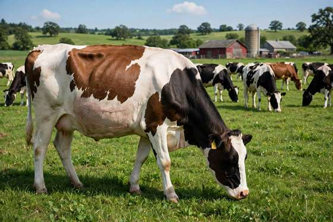
Full recovery — the cow returns to the herd and to production
Prognosis: with early diagnosis, clean surgery and good aftercare, most cows recover fully within 2–3 weeks and return to normal milk production. The prognosis is best when surgery is done early — a cow operated on after days of illness, dehydration and weight loss recovers much more slowly. Emergency cases such as intestinal torsion carry a guarded prognosis, and the veterinarian will discuss the chances honestly before operating.
⚠ Field Guidelines for Farmers:
Call the veterinarian early — a cow that stops eating, drops in milk or shows colic for more than a day needs examination, not waiting.
Do not give medicines or drenches before the veterinarian has examined the animal — they can hide the signs and make diagnosis harder.
Prevent traumatic reticuloperitonitis: keep nails, wire and metal out of feed and fodder, and consider a rumen magnet as advised by your veterinarian.
Prevent displaced abomasum: feed a balanced transition ration, avoid sudden concentrate increases after calving, and keep fresh cows eating well.
Keep the surgical patient in a clean, dry pen with fresh water and hay, and complete all prescribed medicines.
Record the surgery date, the diagnosis and the medicines given — the record helps the veterinarian at every future visit.
Frequently Asked Questions
What is a laparotomy in cattle?
A laparotomy is a surgical incision through the abdominal wall that allows the veterinarian to examine, diagnose and treat disorders inside the abdomen. In cattle it is most often done on the standing animal through the left or right flank, under local anaesthesia, and is used both as an exploratory procedure and as the approach for corrective surgery such as treating a displaced abomasum.
What are the main indications for laparotomy in cattle?
The main indications are left and right displacement of the abomasum (LDA and RDA), intestinal obstruction, peritonitis, traumatic reticuloperitonitis, foreign bodies, caecal dilatation and torsion, and any abdominal disorder that cannot be diagnosed or treated by examination, ultrasound and medical treatment alone. Exploratory laparotomy is also done when the cause of chronic abdominal pain, bloat or weight loss remains unclear.
Which anaesthesia is used for laparotomy in cattle?
Standing flank laparotomy is usually done under local or regional anaesthesia, most commonly a proximal or distal paravertebral block with lidocaine, sometimes combined with a local infiltration (line block or inverted-L block) and light sedation with xylazine. General anaesthesia is reserved for ventral midline approaches and recumbent surgery, where the animal must lie on its back.
What is the difference between left flank and right flank laparotomy?
The left flank approach gives the best access to the rumen and is used for rumenotomy, left displacement of the abomasum (LDA) and left-side exploration. The right flank approach gives access to the abomasum, intestines, caecum and liver, and is used for right displacement of the abomasum (RDA), intestinal obstruction and caecal disorders. The surgeon chooses the side according to the suspected organ involved.
How is the abdominal wall closed after laparotomy?
The abdominal wall is closed in layers: the peritoneum and transverse abdominal muscle together, then the internal and external oblique muscles, and finally the skin. Absorbable suture material is used for the inner layers and non-absorbable or absorbable material for the skin, as prescribed by the veterinarian. Correct layer-by-layer closure prevents hernias and wound breakdown.
My cow had stomach surgery — how long until she eats normally?
Most cows start eating small amounts of hay within 12 to 24 hours after a standing flank laparotomy, and appetite usually returns to normal within 3 to 5 days. Offer fresh water and good-quality hay first, then return gradually to normal feeding. If the cow is still not eating after two days, or stops eating again, call the veterinarian — it can be a sign of infection or another problem inside the abdomen.
How do I take care of my cow's wound after surgery?
Keep the cow in a clean, dry, well-bedded pen away from flies and mud. Check the wound twice daily for swelling, heat, discharge or open stitches, and do not wash it unless the veterinarian tells you to. Give all medicines exactly as prescribed by the veterinarian, including the full course of antibiotics and pain relief, and keep the cow away from other animals that may lick or rub the wound.
گائے میں لیپروٹومی (پیٹ کا آپریشن) کب ضروری ہوتا ہے؟
جب گائے کے پیٹ میں کوئی ایسی بیماری ہو جو دوائی سے ٹھیک نہ ہو — جیسے معدے (ابومیسَم) کا اپنی جگہ سے ہٹ جانا، آنتوں کی بندش، پیٹ کے اندر انفیکشن، یا لوہے کی چیز نگلنے سے زخم — تو ڈاکٹر پیٹ کھول کر اندر دیکھتا اور علاج کرتا ہے۔ یہ آپریشن صرف مستند ویٹرنری ڈاکٹر بے ہوشی اور جراثیم سے پاک ماحول میں کرتا ہے۔
Key Takeaway
Laparotomy is the gateway to abdominal surgery in cattle: a carefully planned incision, usually in the standing animal under local anaesthesia, that lets the veterinarian diagnose and treat disorders no medicine can reach. Success depends on early decision-making, correct choice of approach, strict asepsis, careful layer-by-layer closure and diligent aftercare. Follow current local veterinary authority guidance for anaesthetic and medicinal use.